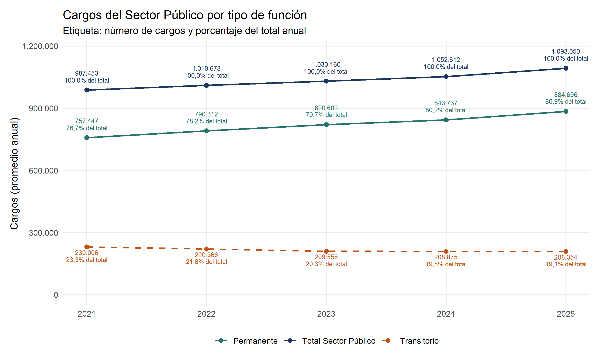

¿Cómo cambió el número de cargos del Sector Público y qué proporción cumplía funciones permanentes o transitorias? Es un antecedente para discutir reorganización y gasto, pero no mide por sí solo eficiencia ni calidad de los servicios.
Resultado calculado
El total pasó de 987.453 a 1.093.050 cargos: un aumento de 10,7%. En 2025, las funciones permanentes representan 80,9% del total y las transitorias el resto.
Total y tipo de función
Código
# Total del Sector Público y sus funciones permanentes y transitorias.print(ggplot(funcion_grafico,aes(anio,cargos,colour=tipo,linetype=tipo))+geom_line(linewidth=.9)+geom_point(size=2.2)+geom_text(aes(label=etiqueta,vjust=ajuste),show.legend=FALSE,size=2.7,lineheight=.9)+scale_colour_manual(values=c('Total Sector Público'=paleta[1],Permanente=paleta[3],Transitorio=paleta[2]))+scale_linetype_manual(values=c('Total Sector Público'='solid',Permanente='solid',Transitorio='dashed'))+scale_x_continuous(breaks=2021:2025)+expand_limits(y=0)+scale_y_continuous(labels=label_number(big.mark='.',decimal.mark=','),expand=expansion(mult=c(.05,.12)))+labs(title='Cargos del Sector Público por tipo de función',subtitle='Etiqueta: número de cargos y porcentaje del total anual',x=NULL,y='Cargos (promedio anual)',colour=NULL,linetype=NULL))

Fuente: DIPRES, archivo aportado al proyecto, hoja General. Promedio anual de cargos. Permanente y transitorio son tipos de función informados por la fuente.
Cómo leer el gráfico. La línea total es la suma de las otras dos. Entre 2021 y 2025, los cargos permanentes aumentaron de 757.447 a 884.696, mientras los transitorios bajaron de 230.006 a 208.354. Por eso, el crecimiento total del período se concentra en funciones clasificadas como permanentes. Esta clasificación describe el tipo de función informado por DIPRES; no indica por sí sola estabilidad contractual, productividad ni necesidad del cargo.
Código
# Mostrar gráfico o tablatabla(comp |>transmute(Dependencia=dependencia,`2021`=a2021,`2025`=a2025,`Cambio en cargos`=cambio,`Variación (%)`=variacion))
Cambio por dependencia, 2021–2025
Dependencia
2021
2025
Cambio en cargos
Variación (%)
Administración Central
428.600
510.160
81.560
19,03
Organismos Autónomos
25.227
25.565
338
1,34
Municipalidades
435.432
450.947
15.515
3,56
Universidades y CFT Estatales
51.080
58.417
7.337
14,36
Empresas Públicas
46.350
47.174
824
1,78
Otras Instituciones Públicas
764
787
23
3,01
Lectura y limitaciones
El crecimiento desigual orienta dónde profundizar. No permite afirmar que existan cargos prescindibles ni explicar el cambio por nuevas instituciones sin desagregar servicios y funciones. Los traspasos entre dependencias también deben examinarse antes de interpretar aumentos como contrataciones nuevas.
Unidad: promedio anual de cargos, no personas únicas ni fotografía al 31 de diciembre. Una persona puede desempeñar más de un cargo.
Cobertura: el archivo contiene exclusiones y reglas institucionales; no es un censo irrestricto de todo trabajador financiado por el Estado. Las notas excluyen senadores y diputados y aplican cobertura acotada a Fuerzas Armadas y de Orden.
Comparabilidad: las ediciones pueden revisar cifras y metodología. Esta página usa una sola edición y verifica que las dependencias sumen el total de cada año.
Para evaluar recortes: faltan remuneraciones, funciones, demanda de atención, productividad y consecuencias sobre los servicios. No se calculan ahorros a partir del número de cargos.